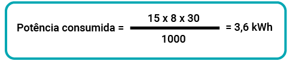

A vida humana é pautada por diferentes necessidades, tais como: dormir, respirar e, como visto nos estudos até aqui, se alimentar. Esses atos são tão naturais que não são percebidos no dia a dia. Pense em quando falta água ou eletricidade na sua casa: enquanto esses serviços estão disponíveis, não se nota sua existência, mas, na falta deles, a vida se torna caótica. Não há energia elétrica para aquecer o banho, para iluminar as residências nem para utilizar equipamentos eletrônicos, como carregadores de celular, por exemplo.
Desde os primórdios, o ser humano, questiona, problematiza e debate diversos temas, entre eles, a eletricidade, responsável por tantas facilidades na contemporaneidade.
A história da eletricidade teve origem na Grécia Antiga, no século VI a.C., quando o filósofo Tales de Mileto descobriu uma resina vegetal fossilizada chamada âmbar, a esfregou em peles de animais e observou a atração de objetos leves, como palha, lascas de madeira e penas.
A pesquisa de Tales foi continuada por várias pessoas, como William Gilbert, que, em 1600, chamou esses diferentes corpos que se atraíram de corpos elétricos.
Em 1730, o físico britânico Stephen Gray descobriu que, além de carregar objetos por fricção (atrito), eles também podem ser carregados por contato (colocando um objeto carregado em contato com um objeto neutro).
A partir dessas observações, Gray desenvolveu o conceito da existência de materiais que conduzem eletricidade com eficiência ou que dificultam a passagem de eletricidade e os chamou de condutores elétricos e isolantes, respectivamente. Com isso, Gray viu a possibilidade de transportar eletricidade de um corpo para outro.
Quando dois materiais de diferentes composições são atritados, um perde elétrons para o outro. Esse processo é chamado de eletrificação triboelétrica. O processo de eletrificação envolve a criação de um desequilíbrio no número de prótons e elétrons em qualquer objeto.
É possível verificar esse conceito de eletrização por atrito atualizando o experimento realizado por Tales de Mileto, com a utilização de um pente e papel picado. Conforme mostra a animação, passe o pente em seus cabelos ou em um casaco de lã e, em seguida, aproxime-o dos papéis picados. Você observará que os pedacinhos de papel se aproximam do pente.
Por desequilíbrio no número de prótons (partículas carregadas positivamente) e elétrons (partículas com carga elétrica negativa), fazendo com que haja uma atração entre os objetos, pois objetos com cargas diferentes se atraem. É exatamente o que diz no ditado popular “os opostos se atraem”.
Observe a figura a seguir e compreenda como é possível essa aproximação entre os objetos.
A energia elétrica é transportada e utilizada para realizar grande parte das atividades do dia a dia, tais como:
Tomar um banho quente (chuveiro elétrico)
Cozinhar (forno/micro-ondas)
Iluminar um espaço
Carregar e usar aparelhos eletrônicos (celular, televisão, geladeira)
É difícil pensar em viver sem energia elétrica. Você já imaginou como seria a sociedade se a energia elétrica nunca tivesse sido descoberta? Provavelmente, muito do que existe hoje jamais teria sido inventado e a percepção sobre o mundo também seria diferente.
Todavia a energia elétrica existe e traz muitos benefícios, mas a sua existência e a necessidade de economizar só são percebidas quando a conta de luz chega todos os meses. Apesar de onerar o orçamento, é necessário pagar pelo serviço consumido.
Para responder a essa pergunta, é preciso entender como a energia elétrica funciona nas residências.
Para funcionar, cada aparelho elétrico precisa ter seus terminais ligados à tomada da rede elétrica. A tomada elétrica, por sua vez, fica ligada ao quadro de distribuição. Esta, então, se liga à caixa central (conhecida como padrão). Finalmente, a caixa padrão se liga a toda a rede de distribuição da companhia elétrica. Observe, a seguir, um exemplo de ligação residencial.
Os fios da rede de distribuição de energia que vêm pelas ruas chegam à caixa de entrada, e nesses fios existe o que chamamos de tensão ou d.d.p. diferença de potencial. É ela que força o movimento dos elétrons A unidade de medida da tensão é volts ou simplesmente V.
Clique ou toque para visualizar o conteúdo.
Todas as informações sobre tensão de funcionamento, corrente elétrica e potência estão descritas nos aparelhos, sejam em decalques ou adesivos. Essas informações são importantes para a correta instalação dos aparelhos em suas tomadas, garantindo seu funcionamento com segurança.
O conhecimento desses dados possibilita que o consumo elétrico dos equipamentos seja previsto. A concessionária de energia, empresa que fornece energia na sua região, instala equipamentos no seu padrão de entrada. Esse equipamento mede a potência consumida por um determinado tempo, chamado de kWh, quilowatt-hora. Verifique um cálculo de consumo a seguir.
Exemplo:
Imagine que uma lâmpada tenha a seguinte descrição em seu corpo:
| Potência | 15 W |
| Fluxo luminoso | 1500 Im |
| Tensão | 100 – 250 V |
| Frequência | 50/60 Hz |
Agora, suponha que a lâmpada foi instalada na sala de estar e fica ligada diariamente por, pelo menos, oito horas. Com essas informações, é possível calcular seu consumo.
Utilize a calculadora para solucionar o exemplo.
Clique para calcular o consumo mensal
Resolução do exemplo:
A lâmpada consome 3,6 kWh por mês.
A unidade de medida watt é a correta, de acordo com o sistema internacional de unidades, para classificar a potência elétrica. Porém, como o consumo de energia residencial atinge a casa do milhar e a produção de energia atinge a casa dos milhões e bilhões, são usados alguns prefixos. São palavras que vêm antes da unidade e modificam o seu multiplicador. Veja os termos mais comuns a seguir.
| Unidades com prefixo | Equivalência em watts |
|---|---|
| 1 kW = 1 Quilowatt | 1.000 watts |
| 1 MW - 1 Megawatt | 1.000.000 watts |
| 1GW = 1 Gigawatt | 1.000.000.000 watts |
O cálculo até aqui conseguiu medir a potência consumida individualmente de cada aparelho em sua residência. Ao somar todos os consumos, é obtido o montante total que, por sua vez, deve ser cobrado em reais (R$). Em cada região do país, existe uma empresa diferente, que fornece a energia em sua unidade consumidora. Em geral, elas têm dois valores nas contas para cada quilowatt-hora consumido:
Nesse momento, a concessionária de energia realiza a leitura do equipamento que mediu o consumo de energia elétrica. Essa medida é multiplicada pelo valor do kWh do TE e do TUSD. Por fim, a soma dos dois produtos fornece o montante da fatura a ser paga, como demonstra a imagem a seguir:
Segundo a conta de luz demonstrada na figura, o consumo dessa residência foi de 286 kWh. Esse número foi multiplicado pelo TE, cujo custo é de R$ 0,34189370, totalizando R$ 97,78. O consumo também foi multiplicado pelo TUSD, cujo custo é de R$ 0,48009528, totalizando R$ 137,30. A soma dos dois valores é o montante total da fatura, nesse caso, R$ 235,08.
Algumas empresas aglomeram as tarifas ou acrescentam outras cobranças, como iluminação pública e perdas no sistema. Os desvios de energia, também conhecidos como “gatos” na cultura popular, acabam sendo pagos por outras pessoas na categoria de perdas de energia. Essas irregularidades são um risco para a segurança das residências, pois são ligações ilegais, feitas sem segurança, correndo o risco de danificar equipamentos ou até causar um incêndio.
As tarifas podem variar de acordo com a bandeira de geração de energia. Conforme as condições de geração de energia elétrica no país, a bandeira pode ser:
Passe o mouse ou toque para acessar o conteúdo.
Condições favoráveis de geração de energia, sendo assim, não há cobrança.
Condições menos favoráveis de geração de energia, sendo cobrados RS 2,92 a cada 100 kWh.
Condições desfavoráveis, sendo cobrados R$ 6,23 a cada 100 KWh.
Condições muito desfavoráveis, sendo cobrados R$ 9,33 a cada 100 kWh.
Pesquise, na conta de energia de sua residência, como é efetuada a cobrança na sua região. Compare com os conceitos vistos até aqui. Pesquise as notícias sobre aumentos nas contas de energia. Essa dica de pesquisa não é avaliativa.
Você viu até aqui o funcionamento da energia em sua residência. Mas como ocorre a geração de energia elétrica no Brasil? É o que será visto em seguida.
O termo energia remete sempre à eletricidade, porém os estudos anteriores mostram que não é apenas essa forma de energia que existe. Você aprendeu que existe a energia que vem dos alimentos (também conhecida como energia química), a cinética (energia que um objeto adquire por estar em movimento) e a energia térmica (energia oferecida aos alimentos ao cozinhá-los).
De acordo com a famosa frase de Antoine-Laurent de Lavoisier, apresentada por Carlos Pianceli: “Na natureza, nada se cria, nada se perde, tudo se transforma”, toda energia pode ser transformada. Todas essas transformações podem ser usadas para gerar e transmitir energia elétrica.
A capacidade de converter outras formas de energia em energia elétrica mudou profundamente a sociedade. Seja o despertador usado para acordar de manhã ou os robôs das indústrias, todos eles dependem de eletricidade. Compreender a transição da energia e seu impacto no dia a dia proporciona uma reflexão sobre o uso consciente da eletricidade, a fim de desenvolver recomendações para geração, transmissão e distribuição de eletricidade favoráveis ao desenvolvimento.
Assista ao vídeo a seguir sobre a matriz energética no Brasil.
A demanda por energia elétrica tem sido cada vez maior com o passar dos anos. O principal motivo disso é o aumento do uso de equipamentos elétricos e eletrônicos, que tem gerado uma demanda maior de energia elétrica.
Matriz energética é o conjunto de fontes de energia ofertado no país para captação, distribuição e utilização de eletricidade nos setores comerciais, industriais e residenciais.
Em 2017, a matriz elétrica brasileira era composta de 65,2% de energia provida de fontes hidráulicas, ou seja, gerada por usinas hidrelétricas. Ao comparar nossa matriz elétrica com o resto do planeta, vemos que nosso percentual de uso de energia hidráulica equivale ao percentual de uso mundial de carvão, petróleo e gás natural para a geração de energia elétrica.
No Brasil, as fontes de energia são: energia hidráulica, com 65,5% de produção; biomassa, com 9,1%; energia eólica, com 8,8%; gás natural, com 8,3%; carvão e seus derivados, com 3,1%; energia nuclear, com 2,2%; derivados do petróleo, com 1,6%; e energia solar, com 1,7%.
Já a proporção mundial está distribuída em: carvão mineral, com 36,8%; gás natural, com 23,5%, hidráulica, com 16,1%; nuclear, com 10,2%; petróleo e derivados, com 2,8%; biomassa, com 2,4 %; e energias solar, eólica, geotérmica, de maré e outras fontes, totalizando em 8,2%.
Além de vermos a fonte de energia elétrica gerada no Brasil, podemos ver também onde ela é utilizada.
De acordo com o relatório da Empresa de Pesquisa Energética, a EPE, com base em dados coletados em 2020, o consumo de energia industrial foi de 35,4%; o de energia residencial foi de 31,53%; o de energia comercial foi de 17,56%; e outros destinos de consumo ficaram com 15,51%.
No mesmo relatório estão os dados sobre consumo de energia nas regiões geográficas do Brasil. A região Norte consome 0,03 milhão de gigawatts-hora de energia; a região Centro-Oeste, 0,04 milhão; a região Nordeste, 0,08 milhão; a região Sul, aproximadamente a mesma quantidade da região Nordeste; e a região Sudeste, 0,23 milhão de energia elétrica, metade da eletricidade produzida em todo o território nacional.
Apesar do fato de menos de um terço do consumo ser residencial, em tempos de crise todas as campanhas de uso consciente e de racionamento de energia se voltam ao consumidor comum. Mesmo assim, muitas empresas têm buscado fontes de energias alternativas, tanto para fins de economia como para fins de um menor impacto ambiental.
E você? Está fazendo sua parte para a economia de energia elétrica?
Uma usina hidrelétrica armazena energia potencial gravitacional por meio da gigantesca quantidade de água presente no reservatório. Para o reservatório existir, há a necessidade de represar o rio e/ou outros cursos-d'água. Porém o fluxo regular do rio é alterado ou, até mesmo, interrompido, fazendo com que a água inunde as áreas do entorno, formando um imenso lago artificial. Essa inundação causa grandes impactos ambientais e sociais. Espécies da fauna que vivem nas regiões inundadas precisam ser removidas de seus habitats, e a flora fica submersa na água, emitindo grandes quantidades de metano, gás carbônico e óxido nitroso. Há casos em que cidades inteiras são inundadas e as comunidades que viviam nessas regiões têm de ser realocadas, perdendo parte de sua memória e de suas raízes. Mesmo se tratando de uma energia renovável sem emitir diariamente os gases do efeito estufa, como em outras formas de geração de energia, as hidrelétricas têm seus impactos ambientais e sociais, principalmente em sua elaboração e construção.
Clique ou toque para visualizar o conteúdo.
O funcionamento começa pelo reservatório. Quanto mais cheio o reservatório estiver, mais energia potencial será capaz de se transformar em energia cinética.
A turbina, que está acoplada ao gerador, gira devido à velocidade da vazão da água.
O gerador movimenta os elétrons, criando uma corrente elétrica. Estes passam pelos transformadores.
O transformador aumentará a tensão de modo que a energia elétrica possa percorrer grandes distâncias.
Todo esse processo permite que as linhas de transmissão possam realizar a distribuição em várias localidades.
Para que a eletricidade chegue às residências, é necessário que ela siga o caminho através dos fios condutores.
1. Barragem - Represa e armazena a água para a produção da energia elétrica.
2. Reservatório - O funcionamento começa pelo reservatório. Quanto mais cheio o reservatório estiver, mais energia potencial será capaz de se transformar em energia cinética.
3. Turbina - A turbina, que está acoplada ao gerador, gira devido à velocidade da vazão da água.
4. Gerador - O gerador movimenta os elétrons, criando uma corrente elétrica. Estes passam pelos transformadores.
5. Transformador - O transformador aumentará a tensão de modo que a energia elétrica possa percorrer grandes distâncias.
6. Transmissão - Represa e armazena a água para a produção da energia elétrica.
7. Fios condutores - Para que a eletricidade chegue às residências, é necessário que ela siga o caminho através dos fios condutores.
Você acha que todas as formas de geração de energia geram impacto no meio ambiente e/ou na sociedade? Na sua opinião, como seria possível diminuir os efeitos de uma futura construção de barragem de usina hidrelétrica em uma comunidade que vive às margens do rio?
Observe, a seguir, uma das maiores usinas hidrelétricas do mundo, a Itaipu:
A Usina Hidrelétrica de Itaipu fica localizada na divisa entre o Brasil e o Paraguai. Foi a maior represa até o ano de 2003, perdendo seu título para a Usina Hidrelétrica das Três Gargantas, na China.
Além dos impactos ambientais citados anteriormente, outro grande problema desse tipo de geração é a dependência das chuvas. Fenômenos climáticos, como o El niño, por exemplo, afetam o volume de chuvas, que, por sua vez, afeta o volume de água armazenada, que, por fim, afeta a quantidade de energia elétrica produzida. Entre as soluções para manter a demanda está o aumento da tarifa, conforme mencionado anteriormente, além disso, a construção de novas usinas e o aumento do uso de outras fontes de energia, que será visto a seguir.
Pesquise sobre a Usina de Belo Monte e descubra qual será sua capacidade de geração de energia elétrica, bem como as notícias sobre os conflitos envolvendo as questões ambientais.
Conforme visto anteriormente, a água e os recursos hídricos, em geral, são necessários à geração de energia, principalmente ao se tratar do Brasil, onde 65,2% da fonte energética provêm de hidrelétricas. Porém, além de sua importância na geração de energia elétrica, a água também é essencial à vida do planeta como um todo, e sua escassez é um problema não só energético, mas global. A população e as cidades estão em constante crescimento, o que aumenta também a demanda de energia, como um círculo vicioso. Com isso, alternativas são buscadas em períodos de escassez de água, como as termelétricas.
Clique ou toque para visualizar o conteúdo.
Apesar de sua extrema importância, as usinas termelétricas têm um funcionamento simples.
Clique ou toque para visualizar o conteúdo.
A partir da queima de um combustível, como gás, petróleo ou carvão, ocorre o aquecimento de um fluido, como a água, por exemplo.
A água é aquecida até entrar em ebulição, ferver, em uma caldeira.
Com o aquecimento do fluido até a ebulição, ocorre a mudança de fase desse líquido, que passa de líquido para gasoso. Nessa mudança de fase, seu volume aumenta muito, sendo aproveitado como em uma panela de pressão.
A pressão do vapor-d’água movimenta as turbinas. Esse sistema é chamado de máquina térmica, ou seja, uma máquina capaz de transformar a energia térmica da queima do combustível em trabalho realizado para mover a turbina (como locomotivas e navios movidos a vapor).
A turbina é acoplada a um gerador, que converte a energia mecânica em elétrica.
1. Combustível - A partir da queima de um combustível, como gás, petróleo ou carvão, ocorre o aquecimento de um fluido, como a água, por exemplo.
2. Caldeira - A água é aquecida até entrar em ebulição, ferver, em uma caldeira.
3. Vapor d'água - Com o aquecimento do fluido até a ebulição, ocorre a mudança de fase desse líquido, que passa de líquido para gasoso. Nessa mudança de fase, seu volume aumenta muito, sendo aproveitado como em uma panela de pressão.
4. Turbina - A pressão do vapor-d’água movimenta as turbinas. Esse sistema é chamado de máquina térmica, ou seja, uma máquina capaz de transformar a energia térmica da queima do combustível em trabalho realizado para mover a turbina (como locomotivas e navios movidos a vapor).
5. Gerador - A turbina é acoplada a um gerador, que converte a energia mecânica em elétrica.
Assim como as hidrelétricas utilizam a energia potencial gravitacional da água para mover as turbinas dos geradores, as usinas termelétricas utilizam o calor da queima de combustível para o mesmo fim. Porém uma grande diferença entre as duas é o custo de produção. As hidrelétricas utilizam a energia da água represada e as termelétricas necessitam ser constantemente alimentadas com combustível, o que gera um custo constante.
Além de ser mais cara de produzir, a energia das termelétricas também é muito mais prejudicial ao meio ambiente. Enquanto as usinas hidrelétricas têm um impacto imediato com a inundação do reservatório (lago) e realocação da biodiversidade, o impacto das termelétricas é permanente, com a liberação de gases a partir da combustão, principalmente o gás carbônico (CO2), que é o principal causador do efeito estufa e da poluição da atmosfera terrestre.
Assista ao vídeo para saber mais sobre o efeito estufa.
Você já deve ter ouvido falar de aquecimento global, não é mesmo?
Bom, o aquecimento global decorre principalmente do efeito estufa, que é um fenômeno natural causado pela concentração de gases na atmosfera terrestre. Esses gases criam uma camada que permite a passagem de luz e calor solar.
É esse processo que garante a temperatura que temos em nosso planeta e que permitiu a existência da vida como conhecemos. Sem esse processo, o nosso planeta seria extremamente frio e não poderia comportar vida. Porém, a emissão de gases poluentes, como o dióxido de carbono, o CO2, tem gerado um aumento do efeito estufa, causando assim o aquecimento global acelerado.
A Ember Climate, organização não governamental que estuda a emissão de gases na produção de energia elétrica, estimou a quantidade de CO2, em gramas, emitida por cada fonte para gerar a mesma quantidade de energia.
Segundo a organização, as fontes hídricas geram 24 gramas de CO2, enquanto o gás natural gera 490 gramas, os derivados do petróleo geram 700 gramas e o carvão, o mais poluente, gera 820 gramas, todos emitidos para a atmosfera. Isso quer dizer que as usinas termelétricas são muito mais poluentes que as hidrelétricas.
Por isso, na Conferência das Nações Unidas sobre Mudança do Clima, a COP26, realizada em 2021 em Glasgow, na Escócia, o Brasil, com mais 40 países, assumiu o compromisso de eliminar o uso da energia a carvão até o ano de 2040.
A ideia não é só reduzir a emissão dos gases danosos emitidos por essas fontes, mas também substituir totalmente essas fontes energéticas por fontes limpas, que geram um menor impacto ambiental, como a energia solar e a eólica.
Pesquise quais medidas podem ser tomadas para a substituição de fontes poluidoras na geração de eletricidade. Pesquise também notícias sobre os movimentos do governo brasileiro e de outros países para diminuir o uso de fontes de energia que causam poluição. Esta proposta não é avaliativa.
Retomando as principais gerações de energia até aqui, compreendemos o funcionamento de hidrelétricas e termelétricas. A primeira, além de causar um impacto ambiental gigantesco na sua construção e inundação de barragem, possui uma grande dependência de fatores climáticos e naturais, como chuvas e cursos de rio. Já a segunda, a termelétrica, emite poluentes e custam muito caro para seu funcionamento e para o ambiente a longo prazo. Neste dilema, em que as demandas de energia só aumentam, é preciso buscar novas fontes de energia. As emergentes, são as fontes de energia renováveis, que representam aquelas com menor impacto ambiental e que se regeneram a curto e médio prazo. Quando pesquisamos energias renováveis, dois ramos são muito emergentes no Brasil, energia eólica e solar.
Neste dilema, em que as demandas de energia só aumentam, é preciso buscar novas fontes de energia. As emergentes são as fontes de energia renováveis, que representam aquelas com menor impacto ambiental e que se regeneram a curto e médio prazo. Na pesquisa de energias renováveis, dois ramos são emergentes no Brasil: energia eólica e solar.
Clique ou toque para visualizar o conteúdo.
Os estudos até aqui trouxeram diversas reflexões em relação à maneira como a energia permeia a sociedade. É possível concluir que a utilização da energia elétrica e a dependência dela modificaram o estilo de vida e o ambiente natural.
A energia elétrica que chega às casas e aos eletroeletrônicos pode percorrer vários caminhos, e conhecer esses caminhos oferece ferramentas para o entendimento do mundo ao redor, permitindo movimentar-se de maneira consciente por ele. Ao compreender o funcionamento da energia na sua residência, você obtém ferramentas para a economia desse recurso e reduz sua despesa financeira. Além do seu papel na sociedade para a preservação da natureza e da biodiversidade, há o dever com os descendentes em relação à qualidade de vida das gerações futuras. É preciso também entender e pensar quem são os maiores consumidores de energia, promovendo políticas de fiscalização em setores, como: indústria, comércio e agronegócio.
De acordo com o estudado, tanto a produção quanto o consumo da energia elétrica têm trajetórias diferentes, algumas ambientalmente mais saudáveis, chamadas de sustentáveis, e outras nem tanto, mas mesmo a geração de eletricidade de forma sustentável tem seus impactos ambientais. Vejamos que até mesmo a produção de energia dos ventos pode trazer prejuízos, assim como a energia do sol também oferece efeitos à natureza.
Com base no que você estudou sobre esses dois tipos de produção de energia mais sustentáveis, reflita e veja se você identifica os impactos que eles podem trazer ao meio ambiente.
Associe as cartas com os tipos de produção de energia e seus respectivos possíveis danos ao meio ambiente.
Extração e tratamento da matéria-prima das placas
Mudança nas rotas dos animais silvestres (por terra e ar)
Mudança no solo e vegetação ao fixar a base das hélices
Quantidade grande de sombras que sua instalação produz no solo e nos ecossistemas vizinhos
Alteração da vegetação no entorno das usinas (grandes campos de placas)
Gasto de outras energias para produzir as placas
Construção e transporte das usinas (grandes ventiladores)
Mudança nas fontes de água de comunidades vizinhas
Você pode pesquisar um documentário que fala sobre a cartografia social e energia eólica no litoral oeste do Ceará, por exemplo.
A resposta a essa pergunta talvez ainda não exista, entretanto, a ciência e a tecnologia continuam avançando e podem descobrir novas fontes. Portanto é preciso incentivar e investir em:
A lógica do consumo sem limites de energia pode ser o grande problema da sociedade. Mais do que escolher a maneira “certa” de consumir, é preciso questionar o estilo de vida que leva a esse consumo desenfreado. Entender outras formas de gerenciar, produzir e consumir energia elétrica, respeitando os espaços e os ciclos naturais, pode ser um próximo passo nessa reflexão. As ciências da natureza trazem a importância da geração de energia a partir de um ponto, mas essa problematização vem de vários lugares diferentes. É possível organizar o conhecimento para tratar dessa questão de forma mais abrangente? Essas reflexões visam incentivar um olhar mais atento aos modos de produção e consumo de energia.
Clique ou toque para apagar a luz e economizar energia.
AMATO, Fábio. Escassez de chuva leva ao maior uso de energia termelétrica em janeiro desde 2015, aponta ONS. G1, 13 mar. 2021. Disponível em: https://g1.globo.com/economia/noticia/2021/03/13/escassez-de-chuva-leva-ao-maior-uso-de-energia-termeletrica-em-janeiro-desde-2015-aponta-ons.ghtml. Acesso em: 4 maio 2022.
CAMPOS, M. A. M.; JARDIM, W. F. Aspectos relevantes da biogeoquímica da hidrosfera. Cadernos Temáticos de Química Nova na Escola, n. 5, p. 18-27, nov. 2003.
CAVALCANTE, Kleber G. Aquecimento da água por energia solar. Brasil Escola, c2022. Disponível em: https://brasilescola.uol.com.br/fisica/aquecimento-agua-por-energia-solar.htm. Acesso em: 25 abr. 2022.
COMO funciona a energia solar. Portal Solar, c2014-2022. Disponível em: https://www.portalsolar.com.br/como-funciona-energia-solar.html. Acesso em: 25 abr. 2022.
CONHEÇA sua conta. Neoenergia Pernambuco, [s.d.]. Disponível em: https://servicos.neoenergiapernambuco.com.br/residencial-rural/Pages/Baixa%20Tens%C3%A3o/conheca-sua-conta.aspx. Acesso em: 20 abr. 2022.
GRANDEZAS, potência e energia elétrica. Blog Explicaê, 19 jul. 2021. Disponível em: https://blog.explicae.com.br/enem/grandezas-potencia-e-energia-eletrica. Acesso em: 17 maio 2022.
GUITARRARA, Paloma. Energia eólica. Brasil Escola, c2022. Disponível em: https://brasilescola.uol.com.br/fisica/energia-eolica.htm. Acesso em: 25 abr. 2022.
HEWITT, P. Indução magnética. In: HEWITT, P. Física conceitual. 9. ed. Porto Alegre: Bookman, 2002.
LABOCART UFC. Cartografia social e energia eólica no litoral oeste do Ceará. Youtube, 16 set. 2016. Disponível em: https://www.youtube.com/watch?v=r5aI64SMTkE. Acesso em: 25 abr. 2022.
LEROY, Jean-Pierre. O impacto sobre o meio ambiente. Le Monde Diplomatique Brasil, 4 jul. 2008. Edição 12. Disponível em: https://diplomatique.org.br/o-impacto-sobre-o-meio-ambiente/. Acesso em: 24 abr. 2022.
MARINHO, Flavia. Usina Hidrelétrica de Itaipu, a maior geradora de energia limpa e renovável do planeta bate recorde histórico de produtividade. Click Petróleo e Gás, 23 set. 2020. Disponível em: https://clickpetroleoegas.com.br/usina-hidreletrica-de-itaipu-a-maior-geradora-de-energia-limpa-e-renovavel-do-planeta-bate-recorde-historico-de-produtividade/. Acesso em: 25 abr. 2022.
NASCIMENTO, Hércules. Os impactos ambientais e sociais da produção de energia eólica. Labocart UFC, 11 nov. 2019. Disponível em: http://www.labocart.ufc.br/?p=650. Acesso em: 24 abr. 2022.
PACCA, J. et al. Corrente elétrica e circuito elétrico: algumas concepções do senso comum. Caderno Brasileiro de Ensino de Física, Florianópolis, v. 20, n. 2, p. 151-167, ago. 2003.
PERSONAGENS. Biblioteca FEM/UNICAMP. Faculdade de Engenharia Mecânica, [s.d.]. Disponível em: http://www.fem.unicamp.br/~em313/paginas/person.htm. Acesso em: 4 abr. 2022.
SERMARINI, Ana Carolina. Os impactos ambientais negativos da energia solar que nunca te contaram. Revolusolar, 13 maio 200. Disponível em: https://revolusolar.org.br/os-impactos-ambientais-negativos-da-energia-solar-que-nunca-te-contaram/. Acesso em: 24 abr. 2022.
TAGLIANI, Simone. Como a energia elétrica dos postes de rua chega às tomadas da sua casa? Engenharia 360, [s.d.]. Disponível em: https://engenharia360.com/como-a-energia-eletrica-chega-nas-tomadas-da-casa/. Acesso em: 26 abr. 2022.
YOUNG, H.; FREEDMAN, R. Física III: Eletromagnetismo. 12. ed. São Paulo: Addison Wesley, 2008.